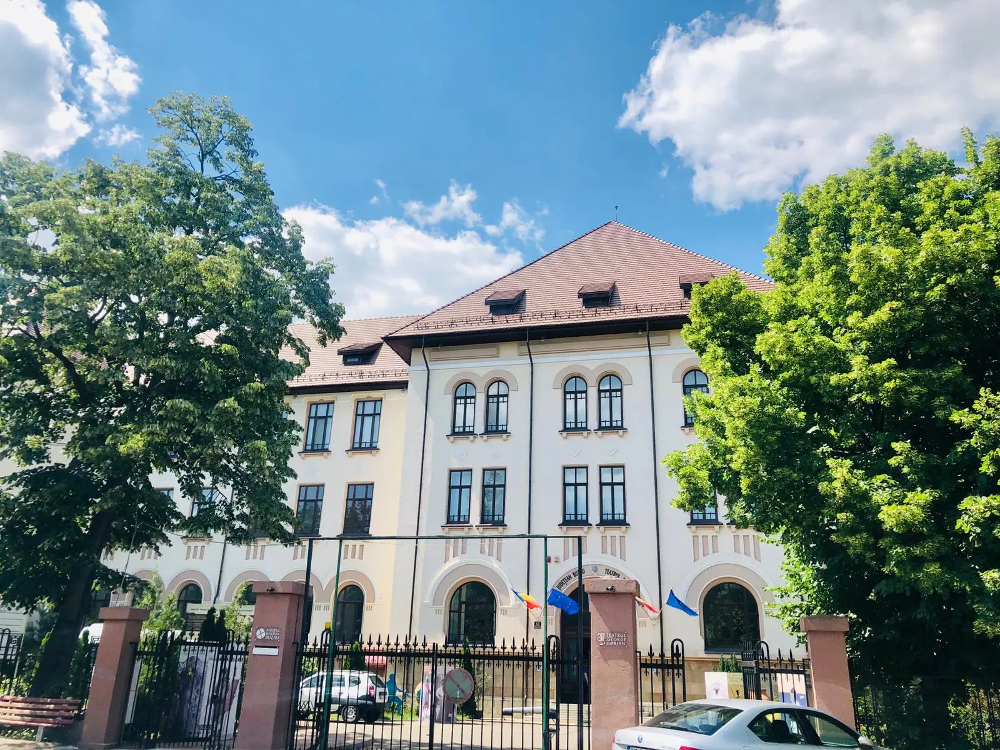
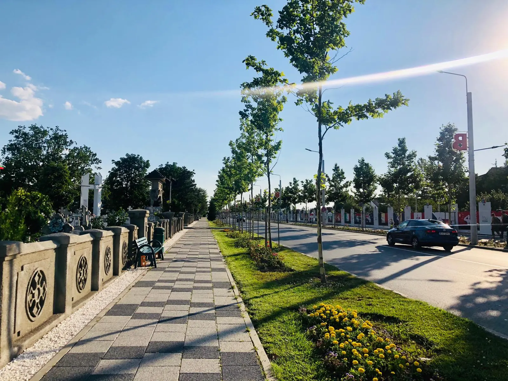

Muzeul Judetean
Calea Eroilor
Conacul Marghiloman

Buzău este municipiul de reședință al județului cu același nume, Muntenia, România. Având 115.494 de locuitori la recensământul din 2011, este al optsprezecelea oraș ca populație din România. Orașul se află pe malul drept al râului Buzău, în dreptul ieșirii acestuia dintre dealurile subcarpatice de curbură, într-o regiune cu climă temperată.
Buzău a fost un important târg în Evul Mediu. La începutul secolului al XVI-lea a fost înființată Episcopia Buzăului. Activitățile economice principale din oraș au fost comerțul și agricultura. După încheierea unei perioade de distrugeri succesive în secolele XVII– XVIII, economia Buzăului a căpătat și o importantă componentă industrială, în paralel cu dezvoltarea unui sistem de învățământ. În această perioadă a fost construit și Palatul Comunal care se află în Piața Daciei, clădirea emblematică a orașului, a fost amenajat parcul Crâng, principala zonă verde și, tot atunci, Buzăul a devenit un important nod feroviar. În perioada comunistă orașul s-a extins mult, triplându-și populația, și au fost construite numeroase fabrici, din care mare parte funcționează și astăzi, în contextul trecerii la o economie de piață.
Wanna-be Frontend Developer